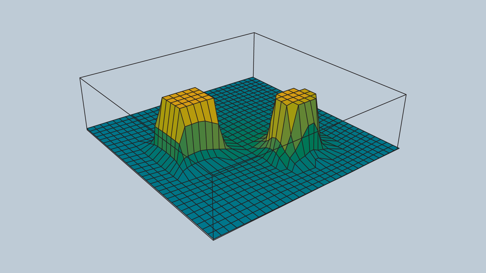

Potential Field
Unlike the methods discussed thus far that discretize the continuous space into a connected graph, the potential field method performs a different type of discretizatioin.
To accomplish its task, the potential field method generates two functions:
- Attracts the robot to the goal
- Repels the robot away from obstacles.
The two functions can be summed up to create a discretized representation. By applying an optimization algorithm such as gradient descent, a robot can move toward the goal configuration while steering around obstacles.
Attractive Potential Field
The attractive potential field is a function with the global minimum at the goal configuration. If a robot is placed at any point and required to follow the direction of steepest descent, it will end up at the goal configuration. This function does not need to be complicated, a simple quadratic function can achieve all the requirements.
where represents the goal position. is a scaling factor.

Repulsive Potential Field
The repulsive potential field is a function that is equal to zero in free space, and grows to a large value near obstacles. One way to create such a potential field is with the function below. Where the function returns the distance from the robot to its nearest obstacle, is a scaling parameter that defines the reach of an obstacle’s repulsiveness, and is a scaling parameter.
An image of a repulsive potential field for an arbitrary configuration space is provided below.

Potential Field Sum
The attractive and repulsive functions are summed to produce the potential field that is used to guide the robot from anywhere in the space to the goal. The image below shows the summation of the functions, and the image immediately after displays the final function.

Imagine placing a marble onto the surface of the function - from anywhere in the field it will roll in the direction of the goal without colliding with any of the obstacles (as long as is set appropriately)!
The gradient of the function dictates which direction the robot should move, and the speed can be set to be constant or scaled in relation to the distance between the robot and the goal.
Problems with the Potential Field Method
The potential field method is not without its faults - the method is neither complete nor optimal. In certain environments, the method will lead the robot to a local minimum, as opposed to the global minimum.
The problem of a robot becoming stuck in a local minimum can be resolved by adding random walks, and other strategies that are commonly applied to gradient descent, but ultimately the method is not complete.
The potential field method isn’t optimal either, as it may not always find the shortest (or cheapest) path from start to goal. The shortest path may not follow the path of steepest descent. In addition, potential field does not take into consideration the cost of every step.